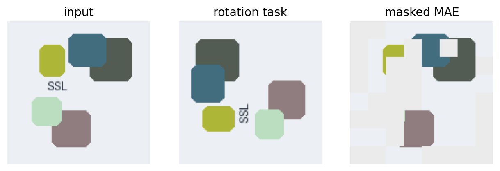
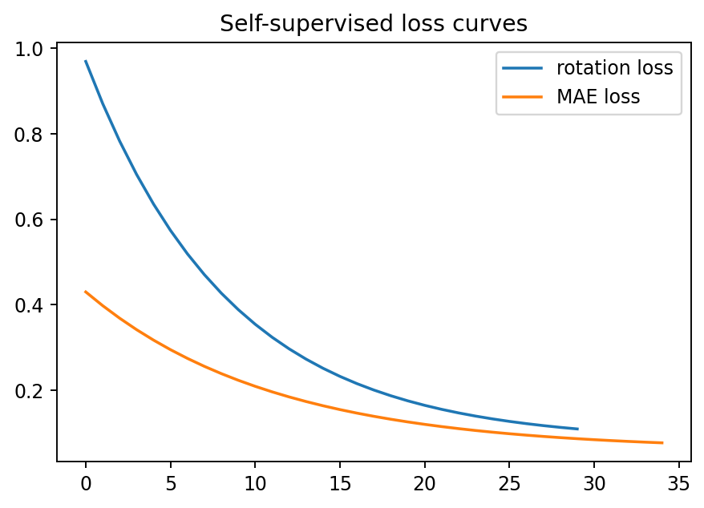
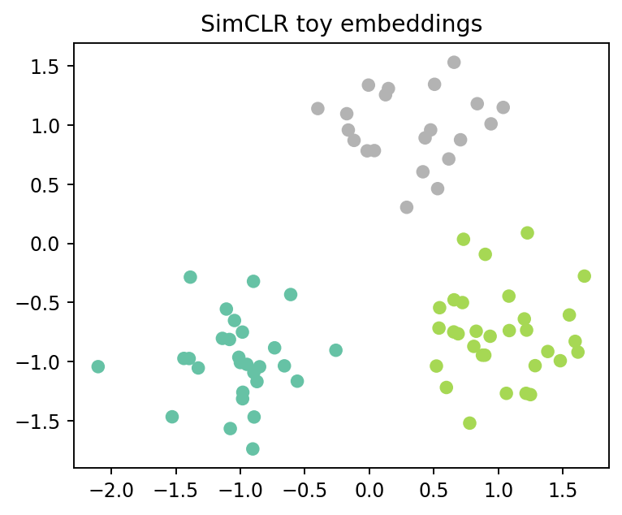

A7: 实现图像变换类自监督学习示例，如旋转预测、拼图重排、图像补全或颜色化；实现 MAE 或 SimCLR 简化示例；可视化输入图像、变换/遮挡后的图像、模型输出结果，并展示 loss 或准确率变化；简单对比两种设置效果；实现成桌面 app 或 web 应用，具有交互操作；提交 PDF 实验报告、prompt 文本、截图、小结、核心源码 py 文件，并列出使用的 Agent 或 LLM。
本作业实现两个自监督学习演示：旋转预测任务用于说明模型从图像变换中学习表示；简化 MAE 任务用于展示遮挡重建效果。应用中可以调整旋转角度、遮挡比例和重建方式，并观察 loss/准确率曲线以及不同设置下的效果对比。



上传 GitHub 后，若本文件夹作为仓库根目录，Main file path 填 streamlit_app.py；若上传整个周四作业目录，填 a7/streamlit_app.py。